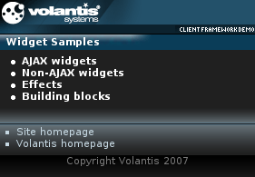

In this module we will create the welcome page used by the Client Framework sample application. It demonstrates the common structure of the application pages and the use of the template you have just created.

<?xml version="1.0" encoding="UTF-8"?> <html xmlns="http://www.w3.org/2002/06/xhtml2" xmlns:event="http://www.w3.org/2001/xml-events" xmlns:mcs="http://www.volantis.com/xmlns/2006/01/xdime/mcs" xmlns:widget="http://www.volantis.com/xmlns/2006/05/widget" xmlns:template="http://www.volantis.com/xmlns/marlin-template">
<head> <title>Framework Client Sample Application</title> <link rel="mcs:theme" href="/themes/main.mthm"/> <link rel="mcs:theme" href="/themes/index.mthm"/> <link rel="mcs:layout" href="/layouts/main.mlyt"/> ... </head>
<head>
...
<style type="text/css" media="handheld, all">
.index {
color: #fff;
padding-left: 18px;
margin: 0px;
}
</style>
</head>
<body>
<template:apply href="templates/demo-main.xdtpl">
<template:binding name="title" value="Widget Samples"/>
<template:binding name="content">
<template:complexValue>
<ul class="index">
<li><a href="index-ajax.xdime">AJAX widgets</a></li>
<li><a href="index-nonajax.xdime">Non-AJAX widgets</a></li>
<li><a href="index-effects.xdime">Effects</a></li>
<li><a href="index-bb.xdime">Building blocks</a></li>
</ul>
</template:complexValue>
</template:binding>
</template:apply>
</body>The complete welcome page should contain the following code.
<?xml version="1.0" encoding="UTF-8"?>
<html xmlns="http://www.w3.org/2002/06/xhtml2" xmlns:event="http://www.w3.org/2001/xml-events"
xmlns:mcs="http://www.volantis.com/xmlns/2006/01/xdime/mcs"
xmlns:widget="http://www.volantis.com/xmlns/2006/05/widget"
xmlns:template="http://www.volantis.com/xmlns/marlin-template">
<head>
<title>Framework Client Sample Application</title>
<link rel="mcs:theme" href="/themes/main.mthm"/>
<link rel="mcs:theme" href="/themes/index.mthm"/>
<link rel="mcs:layout" href="/layouts/main.mlyt"/>
<style type="text/css" media="handheld, all">
.index {
color: #fff;
padding-left: 18px;
margin: 0px;
}
</style>
</head>
<body>
<template:apply href="templates/demo-main.xdtpl">
<template:binding name="title" value="Widget Samples"/>
<template:binding name="content">
<template:complexValue>
<ul class="index">
<li>
<a href="index-ajax.xdime">AJAX widgets</a>
</li>
<li>
<a href="index-nonajax.xdime">Non-AJAX widgets</a>
</li>
<li>
<a href="index-effects.xdime">Effects</a>
</li>
<li>
<a href="index-bb.xdime">Building blocks</a>
</li>
</ul>
</template:complexValue>
</template:binding>
</template:apply>
</body>
</html>| Name | Purpose |
|---|---|
| a | Used to create an explicit link to another place in the same document or to another document. The current document is the source of the link and the value of the href attribute, defines the link target |
| body | Contains the document's content. |
| div | A section used to add extra structure to documents. Style sheets can be used to control the presentation. |
| head | Information such as the title and other metadata that is not document content. The contained title element is required. |
| html | The container for the XDIME 2 document. |
| li | A list item in an ordered, unordered or navigation list. |
| link | Defines a single link. Multiple links and relationships may be used in the head section of a document. |
| title | The title element is used to identify the document. It can contain only text. |
| ul | A list of unordered items. |
Applies a template to the bound parameter values. If the optional href attribute is set, the template:binding element must be used to specify a binding. If the attribute is omitted, multiple template:bindings and a nested template:definition must be used. | |
| template:binding | Specifies a binding to a parameter value. If a value is fixed, then it should be set using the value attribute. If value is dynamic or larger than can be used as an attribute, then it can be set using a nested element appropriate to the parameter type. |
| template:complexValue | Specifies a complex value for a parameter. The element has an open content model. |
| Core attributes | Attributes that are common to XDIME 2 elements. |
| Hypertext attributes | Attributes that define link targets. |